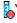

If objects within a calculation view are missing, for example, if the objects or its references are deleted, then such calculation views are referred to as broken models. By using proxies, SAP HANA modeler helps you work with broken models and fix inconsistencies.
When you open broken models, modeler displays red decorators for all missing objects that are essential to successfully activate the calculation view.
Example:
If you have defined a calculation view CV1 on table T1 (C1, C2, C3) such that Attributes A1, A2, A3 is defined on columns C1, C2, C3 respectively. Now, if you remove column C3 from the table T1, then the attribute A3 becomes inconsistent. In such cases, modeler injects proxies for C3, and when you open the calculation view CV1 in the editor, modeler displays a red decorator  for C3 and an error marker for A3 to indicate that it is inconsistent.
If the connection to SAP HANA system is not available, and if you try to open a calculation view, then modeler uses proxies for all required objects and opens the calculation view in read-only mode. But, since the model is not broken, the red decorators and the error markers are not shown.